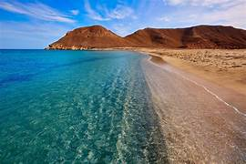

Huatulco
Un destino paradisíaco en el sur de México
Descubre la belleza de Huatulco
Sumérgete en las aguas cristalinas y relájate en las playas de arena dorada de Huatulco.

Un destino paradisíaco en el sur de México
Sumérgete en las aguas cristalinas y relájate en las playas de arena dorada de Huatulco.
